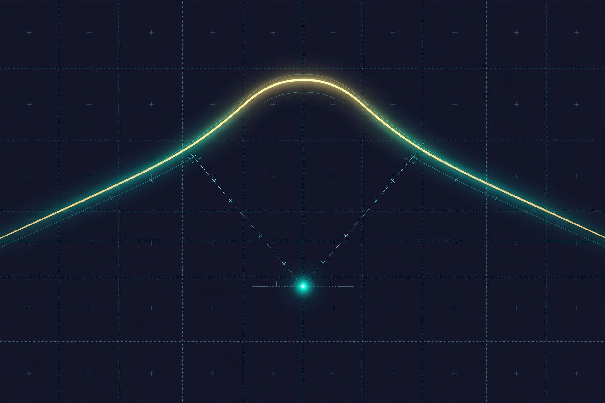

Những ngày qua bạn học cách train hiệu quả: ổn định vòng lặp (Ngày 11), đánh giá tử tế (Ngày 12). Nhưng trước khi "tối ưu" bất cứ thứ gì, phải biết nút thắt cổ chai (bottleneck) nằm ở đâu. Đoán sai chỗ → tối ưu 3 ngày mà tốc độ không nhúc nhích. Hôm nay học cách đo trước, tối ưu sau — profiling biến "cảm giác chạy nhanh" thành số liệu.
Đo và đọc được wall time, tokens/s, GPU utilization, peak VRAM — và hiểu mỗi con số nói gì.
Phân biệt 4 loại bottleneck: CPU, GPU, memory, I/O — biết dấu hiệu nhận biết từng loại.
Dùng PyTorch profiler cơ bản: đọc trace, tìm kernel chiếm thời gian nhất.
Hiểu roofline intuition: memory-bound vs compute-bound, biết attention batch nhỏ bị nghẽn ở đâu.
Thực hành quy trình profiling 5 bước: chỉ giữ cải tiến nào đo được là có lợi.
Đo năng lượng bằng CodeCarbon: phân biệt đo cảm biến với ước lượng, báo cáo đúng cách.
1. Wall time và tokens/s — đồng hồ của người thật
Wall time là thời gian đồng hồ treo tường đo được — từ lúc bạn bấm chạy đến lúc xong, kể cả thời gian chờ dữ liệu, chờ GPU, chờ ổ cứng. Ngược lại, các bài báo quảng cáo hay khoe FLOPs lý thuyết (số phép tính GPU "có thể" làm trong điều kiện hoàn hảo). Hai con số này khác nhau một trời một vực.
Ví dụ đời thường: nhà sản xuất quảng cáo xe "tốc độ tối đa 300 km/h" — đó là FLOPs lý thuyết. Còn bạn đi làm thực tế qua đường đông, đèn đỏ, ổ gà chỉ được 40 km/h — đó là wall time. Người trả tiền (bạn) chỉ quan tâm 40 km/h, không phải 300 km/h.
💡 Chỉ số vàng của dân train LLM: tokens/s — số token xử lý mỗi giây trong điều kiện thực tế. Nó gộp tất cả: tính toán, đọc bộ nhớ, chờ dữ liệu, overhead framework. Tối ưu xong mà tokens/s không tăng → tối ưu đó vô nghĩa.
# Đo tokens/s trong vòng train — siêu đơn giản
import time
torch.cuda.synchronize() # chờ GPU làm xong đã
t0 = time.time()
for step in range(100):
batch = next(dataloader) # giả sử batch = (B, T)
train_step(batch)
torch.cuda.synchronize()
t1 = time.time()
tokens_per_s = 100 * B * T / (t1 - t0)
print(f"{tokens_per_s:,.0f} tokens/s")
⚠️ Bẫy thường gặp: quên torch.cuda.synchronize() trước khi đo. GPU chạy bất đồng bộ — đo không sync là đo "thời gian ra lệnh", không phải "thời gian làm xong".
2. Utilization — GPU rảnh mà vẫn tưởng đang bận
Utilization (% util của nvidia-smi) cho biết GPU có "đang làm việc" bao nhiêu phần trăm thời gian. Nhiều người sốc khi thấy: code train LLM chạy ngon lành, nhưng GPU chỉ đạt 30%.
Ví dụ đời thường: quán phở có ông đầu bếp (GPU) siêu nhanh, nhưng bồi bàn (dataloader/CPU) đưa order chậm rì. Bếp đứng chơi 70% thời gian — quán vẫn "hoạt động được", nhưng năng suất thảm hại. Đổ lỗi cho bếp (mua GPU xịn hơn) là sai: người gây nghẽn là bồi bàn.
Cách đọc utilization:
> 80%: GPU làm việc cật lực — bottleneck nằm ở GPU, lúc này mới nên nghĩ đến tối ưu kernel/độ chính xác thấp hơn.
30–80%: nửa nạc nửa mỡ — có thể do batch nhỏ, kernel ngắn, hoặc dữ liệu chập chờn. Cần profiler xem chi tiết.
< 30%: GPU đói việc — gần như chắc chắn bottleneck ở CPU/dữ liệu (data stall) hoặc overhead, không phải ở sức mạnh GPU.
💡 Nguyên tắc: utilization thấp không phải lúc nào cũng xấu (với inference batch=1 thì thấp là bình thường). Nhưng với train, GPU 30% nghĩa là bạn đang trả tiền điện cho một cỗ máy đứng chơi — đó là tiền đốt vô ích, cũng là điện thải CO₂ vô ích.
3. Peak VRAM và OOM — bộ nhớ là trần nhà
OOM (Out Of Memory) là cái chết phổ biến nhất của dân train LLM: chạy đang ngon, bỗng CUDA out of memory. VRAM trên GPU chứa 4 thứ:
VRAM ≈ weights + activations + gradients + optimizer states
Dịch ra: weights (tham số mô hình), activations (kết quả trung gian của forward — cần giữ lại để backward, to nhất khi batch lớn), gradients (đạo hàm, cùng kích thước với weights), optimizer states (Adam lưu thêm 2 số cho mỗi tham số: momentum + variance).
Công thức ước lượng nhanh cho Adam fp32:
Weights (fp16): 2 bytes/tham số → model 1B ≈ 2 GB.
Gradients (fp16/fp32): thêm ~2–4 bytes/tham số.
Adam states (fp32): 2 × 4 = 8 bytes/tham số (m và v).
Tổng cộng ≈ 12 bytes/tham số (chưa tính activations!).
→ Model 1B tham số cần ~12 GB chỉ cho phần "cứng", trước cả activations. GPU 16 GB mà đòi train 1B với batch lớn → OOM là chắc chắn.
💡 Mẹo thực chiến: khi OOM, đừng vội giảm model. Thứ tự thử: (1) giảm batch size, (2) dùng gradient accumulation (chia batch nhỏ, cộng dồn gradient — hiệu quả tương đương batch lớn mà tốn ít VRAM), (3) gradient checkpointing (đổi VRAM lấy tính toán lại), (4) mixed precision (fp16/bf16). Mỗi cách đều có cái giá — và bạn kiểm chứng bằng cách đo lại tokens/s.
4. Data stalls — bếp chờ nguyên liệu
Data stall là tình trạng GPU đã tính xong batch cũ, mà batch mới chưa tới — GPU ngồi chờ, dataloader chạy sau lưng. Quay lại quán phở: đầu bếp (GPU) nấu xong tô phở trong 10 giây, nhưng bồi bàn (dataloader) mất 30 giây mới mang nguyên liệu + order tiếp theo tới. Bếp rảnh 20 giây mỗi lượt — đó là data stall.
Nguyên nhân phổ biến: đọc file từ ổ HDD chậm, giải nén/tokenize ngay trong lúc train, num_workers=0 (chỉ 1 tiến trình chuẩn bị dữ liệu), hoặc quên pin_memory=True (chuyển dữ liệu CPU→GPU chậm vì không dùng bộ nhớ ghim).
Hai công tắc hay bị quên nhất:
num_workers=4..8: cho phép nhiều tiến trình CPU chuẩn bị batch song song, trong khi GPU đang train batch hiện tại (pipeline chồng lấp).
pin_memory=True: dữ liệu nằm trong vùng nhớ "ghim" → chuyển sang GPU nhanh hơn nhiều lần so với nhớ thường.
Tối nay trong lab, bạn sẽ bật/tắt 2 công tắc này và đo tokens/s thay đổi bao nhiêu — có thể bất ngờ đấy.
💡 Cách phát hiện nhanh: trong PyTorch profiler, nếu thấy các kernel GPU có khoảng trống (gap) giữa chúng, và trước mỗi gap là một thanh CPU dài mang tên dataloader — đó chính là data stall. Không cần đoán, trace nói cho bạn biết.
5. PyTorch profiler — kính hiển vi của dân train
Khi utilization hay tokens/s cho tín hiệu lạ, bạn cần nhìn bên trong: từng kernel GPU chạy bao lâu, CPU đang làm gì trong lúc GPU chờ. PyTorch profiler ghi lại toàn bộ timeline đó.
# Ghi trace 100 bước, xem bằng TensorBoard
from torch.profiler import profile, ProfilerActivity, schedule
sched = schedule(wait=10, warmup=10, active=20, repeat=2)
with profile(activities=[ProfilerActivity.CPU, ProfilerActivity.CUDA],
schedule=sched,
on_trace_ready=torch.profiler.tensorboard_trace_handler("./trace"),
with_stack=True) as prof:
for step in range(100):
train_step(next(dataloader))
prof.step()
Giải thích nhanh: wait = bỏ qua 10 bước đầu (khởi động, chưa ổn định), warmup = 10 bước làm nóng, active = ghi chi tiết 20 bước, repeat = lặp lại chu kỳ. Chỉ ghi đoạn ngắn để file trace không phình to.
Cách đọc trace (mở bằng TensorBoard → tab PyTorch Profiler):
Bảng Operator View: sắp xếp theo self_cuda_time (thời gian GPU tự thân) giảm dần — dòng đầu tiên chính là "thủ phạm" chiếm nhiều thời gian nhất. self_cpu_time cao ở dataloader = nghi data stall.
Timeline view: nhìn bằng mắt — kernel nào dài nhất, chỗ nào có gap, CPU và GPU có chồng lấp nhau không.
Memory view: xem peak VRAM rơi vào bước nào, activations của layer nào phình nhất.
⚠️ Profiler tự nó cũng tốn tài nguyên — chỉ bật khi cần chẩn đoán, và chỉ ghi vài chục bước. Đừng để profiler bật suốt cả buổi train: vừa chậm, vừa tốn điện vô ích.
6. Roofline intuition — biết mình bị nghẽn ở "mái" nào

Một phép tính trên GPU bị giới hạn bởi 2 "trần": trần băng thông bộ nhớ (đọc/ghi dữ liệu nhanh đến đâu) và trần tính toán (nhân ma trận nhanh đến đâu). Mô hình roofline vẽ 2 trần này thành hình "mái nhà":
Arithmetic intensity = FLOPs ÷ bytes đọc/ghi
Arithmetic intensity (cường độ tính toán) = mỗi byte dữ liệu đọc từ bộ nhớ thì làm được bao nhiêu phép tính. Intensity thấp = đọc nhiều, tính ít (như đi chợ mua 1 quả trứng mà đi cả 10 km — tốn xăng cho việc vặt). Intensity cao = đọc ít, tính nhiều (mua cả xe tải hàng một chuyến — đáng công đi).
Đọc biểu đồ bằng trực giác:
Vùng memory-bound (trái, dưới mái dốc): hiệu năng bị giới hạn bởi tốc độ đọc/ghi bộ nhớ. Attention với batch nhỏ nằm đây — đọc cả ma trận Q, K, V khổng lồ mà mỗi phần tử chỉ nhân vài lần. Mua GPU tính nhanh hơn cũng vô ích; thứ cần là đọc ít đi.
Vùng compute-bound (phải, dưới mái ngang): hiệu năng bị giới hạn bởi sức tính toán. Matmul lớn với batch lớn nằm đây — lúc này GPU mạnh hơn / fp16 mới phát huy.
Ridge point (đỉnh mái): điểm giao nhau — intensity lý tưởng.
FlashAttention là ví dụ kinh điển: nó không giảm số phép tính, mà giảm số lần đọc/ghi bộ nhớ — đẩy điểm attention từ vùng memory-bound leo lên gần mái. Đó là lý do nó nhanh gấp nhiều lần dù "cùng công thức toán".
💡 Bài học thực tế: trước khi hỏi "làm sao cho nhanh hơn", hãy hỏi "mình đang ở vùng nào của roofline". Ở vùng memory-bound mà đi tối ưu phép tính (vd: kernel matmul xịn hơn) = sửa sai chỗ.
7. Quy trình profiling 5 bước — đừng tối ưu bằng cảm giác
Toàn bộ bài hôm nay gói gọn trong một quy trình. Dán nó lên tường:
"Bottleneck là data stall vì self_cpu_time của dataloader cao + trace có gap"
1 câu giả thuyết rõ ràng
4. Can thiệp 1 biến
Chỉ đổi một thứ: vd num_workers 0→8. Không đổi 3 thứ cùng lúc
Kết quả không bị nhiễu
5. Đo lại
Chạy lại đúng 100 bước, so before/after
Bảng so sánh (mẫu dưới)
⚠️ Quy tắc sắt — một biến một lần: đổi num_workers, pin_memory và batch size cùng lúc rồi thấy nhanh hơn → bạn không biết cái nào có tác dụng, cái nào vô hại, cái nào thậm chí làm chậm. Khoa học = cô lập biến số.
💡 Tinh thần của bảng này: ý tưởng hay không quan trọng bằng số đo. Một "tối ưu" không làm tokens/s tăng (hoặc tăng không đáng kể so với độ nhiễu) thì loại bỏ — code càng ít "tối ưu thừa" càng dễ bảo trì. Tối nay trong lab, bảng before/after chính là đầu ra bạn phải nộp.
⚡ Góc tiết kiệm năng lượng
Profiling không chỉ để chạy nhanh — mà còn để đỡ tốn điện. Đo năng lượng bằng CodeCarbon:
# pip install codecarbon — bọc quanh vòng train
from codecarbon import EmissionsTracker
tracker = EmissionsTracker() # tự phát hiện phần cứng + vị trí
tracker.start()
train(...)
emissions = tracker.stop()
print(f"CO2: {emissions:.3f} kg | xem chi tiết trong emissions.csv")
Đo cảm biến (sensor) vs ước lượng: CodeCarbon đọc công suất thực từ cảm biến phần cứng (RAPL trên CPU, NVML trên GPU) khi có — đó là đo. Khi không có cảm biến, nó ước lượng từ TDP (công suất thiết kế) của phần cứng. Hai con số này khác nhau: báo cáo phải ghi rõ bạn đang đo hay ước lượng.
Ghi rõ phần cứng + vị trí địa lý khi báo kWh: 1 kWh ở nơi điện than khác xa 1 kWh ở nơi điện gió về lượng CO₂. CodeCarbon quy đổi theo lưới điện của quốc gia/vùng — nên trong báo cáo thí nghiệm luôn ghi: GPU gì, ở đâu, đo hay ước lượng.
Chỉ giữ tối ưu nào giảm năng lượng thực tế: một "tối ưu" làm tokens/s tăng 5% nhưng khiến GPU ăn điện nhiều hơn 20% → tổng năng lượng cho cùng 1 epoch có thể tăng. Quy tắc: tính tokens/kWh (hoặc kWh/epoch) trước và sau — chỉ giữ cái nào giảm năng lượng thật.
✅ Tóm tắt
Wall time & tokens/s là sự thật — FLOPs quảng cáo là lý thuyết. Tối ưu xong mà tokens/s không tăng thì vô nghĩa. (Nhớ torch.cuda.synchronize() trước khi đo!)
Utilization: GPU > 80% mới nghĩ đến tối ưu kernel; < 30% gần như chắc chắn là data stall — đừng đổ lỗi cho GPU.
Peak VRAM = weights + activations + gradients + optimizer states. Adam fp32 ≈ 12 bytes/tham số — ước lượng trước khi OOM dạy cho bạn bài học.
Data stall: bếp (GPU) chờ nguyên liệu (dataloader). Thuốc: num_workers↑ + pin_memory=True.
PyTorch profiler: đọc self_cuda_time tìm kernel nặng nhất, self_cpu_time của dataloader tìm data stall; chỉ bật khi chẩn đoán.
Roofline: arithmetic intensity = FLOPs/byte. Attention batch nhỏ = memory-bound (cần đọc ít đi, như FlashAttention); matmul lớn = compute-bound (cần tính nhanh hơn). Sửa đúng mái mới có tác dụng.
Quy trình 5 bước: baseline → đo → giả thuyết → can thiệp 1 biến → đo lại. Bảng before/after quyết định giữ hay loại — không giữ "tối ưu" nào không đo được lợi ích.
🗣️ Tự luyện nói (không cần nộp)
Giải thích cho một người bạn không học AI:"Vì sao nâng cấp GPU xịn hơn chưa chắc làm train nhanh hơn, và làm sao biết có nên nâng cấp?" — Nếu bạn trả lời trôi chảy trong 1 phút (nhắc được utilization, data stall, roofline), bạn đã thật sự hiểu bài hôm nay. 🌙 Tối nay trong lab, bạn sẽ profile 100 bước train, tạo trace, thử pin_memory/num_workers, và nộp bảng before/after — đúng quy trình 5 bước vừa học.